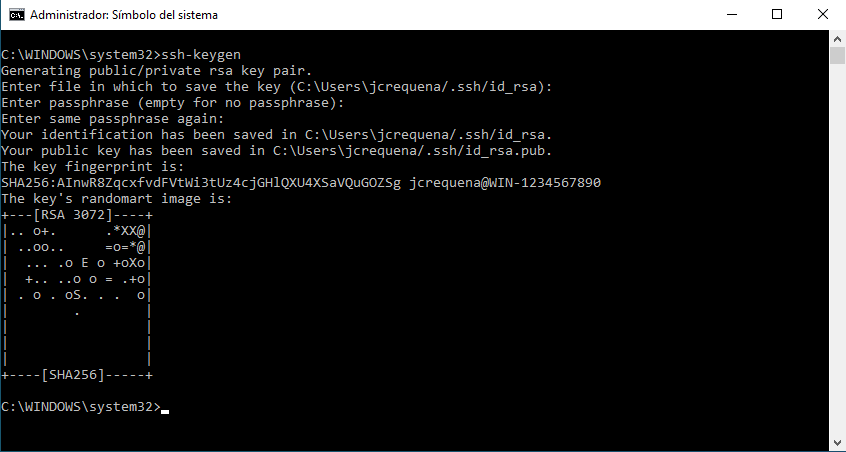
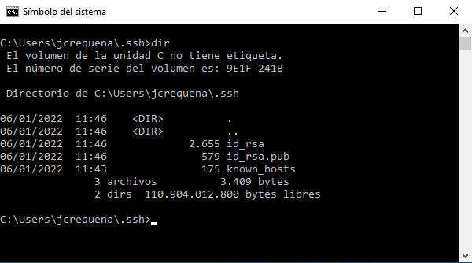
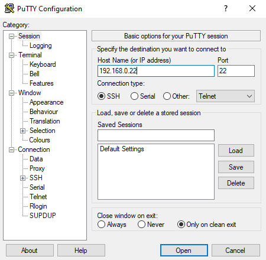

3.1.3 Secure Shell para administración remota mediante certificado
1. Introducción
El protocolo SSH (Secure SHELL) proporciona un método seguro de acceder a un servidor privado mediante el uso de credenciales, usuario y contraseña.
Hasta ahora, generalmente nos hemos conectado al servidor SSH de Ubuntu Server autenticándonos con usuario/contraseña. Tanto la contraseña como el usuario pueden ser robados por cualquier atacante, y esto pondría en riesgo la confidencialidad de la información. Para solucionar este problema se ofrece el uso de claves SSH, que a diferencia de las contraseñas, son más complicadas o incluso casi imposibles de descifrar. La autenticación mediante clave pública y privada dota al servidor SSH de un plus de seguridad a nuestro sistema, ya que entre otras cosas, es más resistente a ataques por fuerza bruta o a robos de contraseñas al despiste.
Las claves SSH consisten en la creación de un par de claves vinculadas y que se crean juntas. Por cada usuario se generan dos largas cadenas de caracteres cada un correspondiente a cada clave. Una es la clave pública y la otra es la clave privada.
- Clave privada: se utiliza para firmar certificados y para asegurar y verificar conexiones. Las claves privadas van en claro, por lo que cualquier persona que tenga acceso a este fichero podrá interactuar con él. Por este motivo la clave privada debe de estar protegida y nunca ser compartida con nadie.
- Clave pública: se utiliza junto a una clave privada para comprobar que los datos están cifrados y verificados. Gracias a esta se puede comprobar la verificación de los datos sin necesidad de conocer la clave privada. La clave pública de un usuario se instala en cualquier servidor y se desbloquea mediante la conexión con un cliente que hace uso de la clave privada. En el caso que las dos claves tengan exactitud, es decir, que coincidan, el sistema permite el acceso sin necesidad de tener que utilizar contraseña. Pero si queremos aumentar esta seguridad, podemos implementar una contraseña en la clave privada.
En este capítulo, aprenderemos cómo evitar el ataque conocido como Man-in-the-middle.
2. Escenario
Para este capítulo, se trabaja con los siguiente equipos:
- Ubuntu Server 20.04.3 que hará las veces de servidor de ssh con ip 192.168.0.22 y sobre el que se realizarán las conexiones con claves.
- Equipo Linux Mint 19 que hará las veces de cliente con ip 192.168.0.19 y donde habrá que generar las claves.
- Equipo Windows 10 que hará las veces de cliente con ip 192.168.0.30 y donde habrá que generar las claves.
3. Acceso desde equipo cliente GNU-Linux/macOS a servidor ssh
En todas las distribuciones de GNU/Linux está disponible el cliente de OpenSSH y se suele incluir por defecto en su instalación básica. En caso de que no se tenga, hay que instalarlo. Para este caso, se instala en el equipo cliente Linux Mint mediante el siguiente comando:
jc@jc-Latitude-E6430:/$ sudo apt update && sudo apt install openssh-client
Por otra parte, en los sistemas macOS el cliente de OpenSSH está incorporado de forma nativa.
La conexión al servidor (utilizando las credenciales), se realiza utilizando el nombre del usuario con el que se quiera conectar. El servidor solicitará la contraseña para el usuario remoto. Esto sería el procedimiento que se suele utilizar habitualmente.
jc@jc-Latitude-E6430:/$ ssh administrador@192.168.0.22
Figura 1. Conexión ssh.
La generación del par de claves asimétricas se realiza utilizando el comando ssh-keygen al igual que en Windows 10 con el cliente de OpenSSH integrado. También se dispone del agente ssh-agent y del comando ssh-add para añadir al almacén de claves las mismas. Incluso la mayoría de distribuciones con entorno gráfico ya vienen preconfigurados para que arranque el agente al iniciar sesión. Para comprobar su estado, basta con ejecutar el comando:
jc@jc-Latitude-E6430:/$ eval `ssh-agent`
Figura 2. Comprobar estado ssh-agent.
Para esta caso de ejemplo, se utiliza ssh-keygen para generar un par de claves RSA (algoritmo de cifrado) de 4096 bits (la longitud en bits).
En primer lugar, se necesita generar un par de claves en el equipo Linux cliente. Para ello se utiliza el siguiente comando donde se nombrará cliente_01 al fichero de clave.
jc@jc-Latitude-E6430:/$ ssh-keygen -t rsa -b 4096
Figura 3. Generar par de claves en cliente.
Las claves públicas se crean usando el mismo nombre base que la clave privada, con una extensión .pub. La ubicación de momento se deja por defecto. Si se quiere guardar las claves en otra ruta, hay que poner la opción -f y la ruta en cuestión: ssh-keygen -f ~/ruta -t rsa -b 4096.
El comando una vez se ejecuta, solicita la opción de poner nombre a estas claves. Para este caso, se ha nombrado como "cliente_01" y para mejorar la seguridad de estos, se introduce la passphrase que se desea. Esta será requerida para cargar la clave privada y que se usará cuando se conecte el cliente a través de SSH. Esto hace que la seguridad obviamente sea mayor, pero también dificultará la automatización.
Al ejecutar el comando, se crea una clave privada escrita en /home/jc/cliente_01 y una clave pública escrita en /home/jc/cliente_01.pub. Las copiamos a /home/jc/.ssh.
Copiado de la clave
Ahora, hay que copiar la clave pública del cliente en el servidor. La clave pública a copiar es la siguiente:
Figura 4. Clave pública del cliente.
Se podrían utilizar diferentes opciones para trasladar la clave ssh al equipo que se desea.
- Introducirla manualmente en /usuario/.ssh/authorized_keys.
- Copiarlo vía scp al equipo remoto.
- Mediante el comando ssh-copy-id.
Para este caso, se utiliza el comando ssh-copy-id.
jc@jc-Latitude-E6430:/$ ssh-copy-id -i ~/.ssh/cliente_01.pub administrador@192.168.0.22
Figura 5. Copiado de la clave pública del cliente la servidor.
Importante: La ejecución del comando solicita la contraseña de un usuario (no es necesario que sea administrador) del equipo remoto para copiarla. Por lo tanto, es necesario disponer de acceso común con un usuario del servidor donde vamos a copiar la clave pública antes de hacer esto.
Acceso remoto vía ssh con el certificado
El comando a utilizar es el siguiente, donde este, solicitará una contraseña que será la clave privada del cliente_01.
jc@jc-Latitude-E6430:/$ ssh -i ~/.ssh/cliente_01 administrador@192.168.0.22
Figura 6. Acceso al servidor con certificado.
4. Acceso desde Windows 10
A partir de Windows 10 versión 1809, se incluye como componente integrado en el sistema tanto un cliente como un servidor de OpenSSH.
La instalación mediante entorno gráfico se realiza desde Configuración > Aplicaciones > Características opcionales > Agregar una característica, localizar Cliente OpenSSH y pinchar en Instalar.
Figura 7. Instalar cliente OpenSSH.
La instalación también se puede realizar mediante PowerShell, para ello, hay que abrir una terminal de PowerShell con privilegios de Administrador. Antes de realizar la instalación, se comprueba su disponibilidad y si ya se encuentra instalado o no.
PS C:\Windows\system32> Get-WindowsCapability -Online | ? Name -like 'OpenSSH*'
Figura 8. Comprobación en PS del paquete OpenSSH.
Como se puede observar en la Figura 4, no se tiene instalado ni el cliente ni el servidor SSH. Para instalar el cliente openSSH, el comando es el siguiente:
PS C:\Windows\system32> Add-WindowsCapability -Online -Name OpenSSH.Client~~~~0.0.1.0
Figura 9. Instalación del cliente OpenSSH en Powershell.
La conexión al servidor se realiza utilizando el nombre del usuario con el que se quiera conectar. El servidor solicitará la contraseña para el usuario remoto. Esta conexión se puede establecer desde una terminal de Símbolo de sistema (cmd).
C:\Windows\system32> ssh administrador@192.168.0.22
Figura 10. Conexión ssh al equipo ubuntu server 20.04.
No obstante, es conveniente utilizar la autenticación mediante clave asimétrica. En este caso se generan un par de claves, una privada y la otra pública. La clave privada es el equivalente a una contraseña; si otra persona consigue tu clave privada se podrá identificar como si fueras tu frente al sistema, con lo que podrá iniciar sesión con tus mismos privilegios en cualquier sistema al que tengas acceso con esa clave privada. La clave pública se deja en el servidor para comprobar la validez de la clave privada; esta clave se comparte con otras personas o sistemas para que comprueben que eres tu quien envía un mensaje o intenta acceder al sistema.
Para ello, tanto desde una terminal de Símbolo de sistema se utiliza el comando ssh-keygen para generar los ficheros de claves.
C:\Windows\system32> ssh-keygen

Figura 11. Generación de par de claves.
La salida del comando genera en primer lugar, la solicitud por la ruta y el nombre de fichero en el que almacenar las claves. En segundo lugar se solicita una frase de contraseña (passphrase) que solicitará cada vez que se establezca una conexión. Esta contraseña no debe ser la misma que la del servidor y actúa a modo de autenticación de doble factor (2FA). Se generarán dos ficheros, uno conteniendo la clave privada y otro conteniendo la clave pública que finaliza en .pub, para este caso, id_rsa.pub ya que no se ha modificado la que se proponía por defecto.

Figura 12. Par de claves del usuario.
Para proteger mejor el fichero con la clave privada, es recomendable utilizar ssh-agent para almacenarla en el contexto de seguridad de Windows, asociado con el inicio de sesión de Windows. El servicio ssh-agent se debe arrancar como Administrador y se utilizará el comando ssh-add para almacenar la clave privada.
Antes de arrancar el servicio ssh-agent en Powershell, hay que asegurarse que esté habilitado, para ello, hay que ejecutar el siguiente comando que permite comprobar el estado:
PS C:\Windows\system32> Get-Service ssh-agent | Select StartType
Figura 13. Comprobar el estado de arranque.
Como se puede observar en la Figura 7, el servicio está deshabilitado para su arranque por lo que si se ejecuta el comando Start-Service ssh-agent, dará un error. Por lo tanto, hay que habilitar el arranque mediante el siguiente comando:
PS C:\Windows\system32> Get-Service -Name ssh-agent | Set-Service -StartupType Manual
Figura 14. Establecer el estado de arranque manual.
Una vez cambiado el estado, ahora se puede arrancar el servicio mediante el siguiente comando:
PS C:\Windows\system32> Start-Service ssh-agent
Figura 15. Arranque del servicio ssh-agent.
PS C:\Windows\system32> Start-Service ssh-agent
Figura 16. Comprobación del estado del servicio mediante aplicación gráfica.
Una vez se ha arrancado el servicio, hay que almacenar la clave privada mediante el siguiente comando:
PS C:\Users\jcrequena> ssh-add .ssh\id_rsa
Figura 17. Almacenar la clave privada.
En este momento, cada vez que desde este cliente windows 10 se necesite la clave privada para autenticación del usuario, ssh-agent recuperará la clave privada local del almacén asociado al inicio de sesión de Windows y se la proporcionará al cliente SSH.
La ventaja de utilizar el agente de autenticación de OpenSSH es que la clave privada se almacenará en el contexto de seguridad de Windows. Dicho de otra forma, la clave privada estará asociada con el inicio de sesión de Windows, por lo que solo será necesario introducir la frase de contraseña (si se definió) una única vez.
Por último, solo falta copiar la clave pública en el servidor.
PS C:\Users\jcrequena> ssh administrador@192.168.0.22 mkdir ~/.ssh
Figura 18. Creación del directorio .shh en el servidor ubuntu server.
A continuación, se copia la clave publica mediante scp:
PS C:\Users\jcrequena> ssh administrador@192.168.0.22 mkdir ~/.ssh
Figura 19. Copiado de la clave pública en el servidor ubuntu server.
A partir de ahora, cada vez que se conecte con el servidor no se solicitará la contraseña, sino que se autenticará utilizando la clave privada. Si se ha configurado una passphrase al generarla, será esta la que se solicite.
4.1 Acceso mediante Putty
En versiones anteriores de Windows 10 1809, al no disponer de cliente de SSH integrado, es necesario utilizar herramientas de terceros, como por ejemplo PuTTY y WinSCP2.
Para realizar la conexión, tan solo será necesario indicar la dirección IP (o el nombre DNS), el puerto TCP del servidor y el protocolo que se utilizará.
|  |
Para generar el par de claves pública/privada, se utilizará el programa PuTTYgen.
- El formato de clave privada utilizado por PuTTY es propio del programa (formato PPK), por lo que no es compatible con OpenSSH ni con SSH2.
- El formato de clave pública guardado en fichero se almacena en formato SSH2, por lo que es necesario convertirlo a OpenSSH para poder utilizarlo en nuestro servidor.
La aplicación PuTTYgen también permite importar claves OpenSSH (desde la entrada de menú Conversions → Import key) y exportar las claves PPK a los formatos OpenSSH y ssh.com. (desde las entradas del menú Conversions → Export OpenSSH key y Conversions → Export ssh.com key). En las imágenes inferiores se puede observar tanto la importación como la exportación.
A continuación, se describe el proceso para generar una clave. En primer lugar hay que pulsar el botón 'Generate' (antes se ha establecido a SSH-2 RSA key como ejemplo). Después de generar, solo es necesario guardar la clave privada pulsando el botón 'Save public key'. La clave pública se puede guardar, aunque si no se dispone de ella en fichero se puede volver a calcular con tan solo cargar de nuevo la clave privada.
Si no se ha guardado la clave pública en un fichero, esta aparece en el campo Key en un formato compatible con OpenSSH. Este texto se debe añadir al fichero ${HOME}/.ssh/authorized_keys del servidor en una única línea. Se puede utilizar para ello cualquier editor de texto como por ejemplo nano.
Figura 20. Contenido del fichero authorized-keys.
En caso de haber guardado el fichero de clave pública, se debe copiar en el servidor (por ejemplo, con el programa WinSCP) y convertir el formato SSH2 en OpenSSH antes de añadir su contenido al fichero ${HOME}/.ssh/authorized_keys.
administrador@orion:~$ ssh-keygen -i -f id_rsa_jcrequena.pub >> ~/.ssh/authorized_keys
Ahora, la configuración de la conexión en PuTTY debe indicar que se utilizará la clave privada para autenticar al usuario en la categoría Connection > SSH > Auth.
PuTTY también dispone de un agente llamado Pageant que permite añadir en él las claves privadas de forma que tanto PuTTY como WinSCP utilicen las claves de este almacén de forma dinámica sin tener que especificarlas en la conexión.
Obra publicada con Licencia Creative Commons Reconocimiento No comercial Compartir igual 4.0